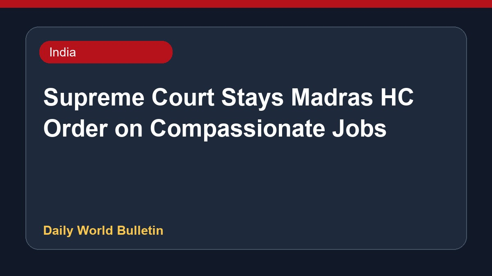

Supreme Court Stays Madras HC Order on Compassionate Jobs

The Supreme Court has stayed a judgment by the Madras High Court that had previously quashed compassionate appointments for families affected by the Karur tragedy. During the proceedings, the apex court questioned whether the government should provide employment to the victims' kin, offering significant relief regarding the job provisions. Legal reports highlighted that the decision came after various petitions were reviewed, pausing the earlier high court ruling that had struck down these employment measures.
Original source: India News Sources
BREAKING| Supreme Court Stays Madras HC Judgment Quashing Compassionate Appointments For Karur Tragedy... - Live Law ↗
BREAKING| Supreme Court Stays Madras HC Judgment Quashing Compassionate Appointments For Karur Tragedy... - Live Law ↗